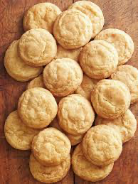

During COVID, I (like everyone else) got into baking. I've collected a bunch of recipes of simple things I
love to bake, and I thought it would be nice to have a digital place to keep them. If you want to get into
baking but don't want super difficult recipies, check out the ones below!
chocolate chip cookies
A recipe I got from my middle school librarian. It makes a lot! This recipe is incredibly
simple to make and incredibly difficult to mess up.

ingredients
- 2 c softened butter1
- 1½ c granulated sugar
- 2 c brown sugar
- 2 Tbsp vanilla
- 3 eggs
- 6 c all-purpose flour
- 1½ tsp baking soda
- 1½ tsp salt
- 4 c chocolate chips
- 2 c chopped nuts (opt.)
|
steps
- Preheat oven to 350°F.
- In an electric mixer, cream together butter, granulated sugar, and brown sugar.
- Add the vanilla and eggs.
- In a separate bowl, combine the flour, baking soda, and salt. Then, slowly
incorporate into the wet batter. *
- Stir in your mix-ins, i.e. the chocolate chips and (if you're weird) chopped nuts.
- Use a small ice cream scooper to drop balls of dough onto a cookie sheet lined with
parchment paper or silicone baking mat.
- Bake at 350°F for around 10 minutes, or until golden brown.
|
ginger molasses cookies
Did you know that Canadian Starbucks sells ginger molasses cookies? I always looked forward
to getting one when I would visit with my family during summer vacation.

ingredients
- ¾ c softened butter1
- 1 c dark brown sugar
- 1 egg
- ¼ c regular unsulphured molasses
- 2¼ c all-purpose flour
- 2 tsp baking soda
- ¼ tsp salt
- 1 tsp ground ginger
- 1 tsp ground cinnamon
- coarse white sugar2
|
steps
- Preheat oven to 375°F.
- In an electric mixer, ceam together butter and brown sugar until smooth and light.
- Beat in the egg and molasses.
- In a separate bowl, combine the flour, baking soda, salt, cinnamon, and ginger. Then,
slowly incorporate this into the wet batter.*
- Use an ice cream scooper to form uniform balls of dough. Using your hands, rolls these
balls until they are nice and round, then roll them in the course sugar.
- Place the balls onto a cookie sheet lined with parchment paper or silicone baking mat.
- Bake at 375°F for 12 minutes.
|
"the good snickerdoodles"
Snickerdoodle cookies were the first thing I ever baked! I would help my grandmother with
the batter sometimes when my family would visit, and then get upset when we had to chill it all night
long.

ingredients
- 1 c softened butter1
- 1½ c granulated sugar
- ½ tsp vanilla extract
- 2 eggs, room temperature
- 2 tsp cream of tartar
- ½ tsp salt
- 2½ c all-purpose flour
- ¼ c coarse white sugar2
- 1½ tsp cinnamon
+ more to taste
I like to double this recipe!
|
steps
- Preheat oven to 400°F.
- In an electric mixer, cream butter and granulated sugar.
- Add vanilla extract, then the eggs one at a time.
- Slowly add the following ingredients in order to the wet mixture: cream of
tartar, baking soda, salt, and all-purpose flour. The batter won't be very stiff.
- Chill the batter in the fridge for at least 4 hours or overnight.
- In a small bowl, combine the coarse white sugar and the cinnamon.
- Use an ice cream scooper to form uniform balls of dough. Using your hands, rolls these
balls until they are nice and round, then roll them in the cinnamon-sugar.
- Place the balls onto a cookie sheet lined with parchment paper or silicone baking mat.
- Bake at 400°F for 8 minutes, turning them halfway through for an even bake.
|
baking tips
* It is best practice to combine the dry ingredients in a separate bowl
before adding to the wet ingredients. Since I bake mostly simple stuff, I've found that it's normally fine
to skip this step. I like to add my flour last because there's so much of it that the mixer can make it fly
everywhere if I'm not careful. Just make sure you fluff up your flour with a fork before putting it into
your measuring cup!
1 Most recipies say to use unsalted butter. I like my cookies a bit
saltier, so sometimes I use salted butter. (To be honest, most of the time I can't tell the difference!) If
your butter isn't softened, put it in a Ziploc bag, put that bag in a bowl, and fill the bowl with hot
water. It only takes a few minutes for the butter to soften up!
2 There are many types of white sugar, distinguished by how coarse or
fine they are. I like to use Trader Joe's white sugar to roll on the outside of cookies because it is
coarser and makes for better decoration. The rest of the time, I use finer granulated white sugar, like
Safeway brand or C&H, since it mixes better into a smooth batter.